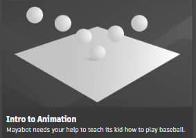

使用 Maya 强大且功能丰富的动画工具，利用行业标准技术，将三维创作变为现实。

使用“重影编辑器”(Ghosting Editor)预览动画前后的帧
Maya 中的动画为您提供了功能强大的工具，使场景中的角色和对象充满活力。通过这些工具，您可以自由地为对象的任何属性设置动画，并获得成功地实现随时间变换关节与骨骼、IK 控制柄及模型所需的控制能力。
从动画基础知识(Animation Basics)部分开始，了解有关 Maya 中的各种动画技术、如何使用不同类型的动画以及如何预览、播放和保存动画的信息。

“应用程序主页”(Application Home)中的“动画”(Animation)交互式教程
您还可以尝试“应用程序主页”(Application Home)中的“动画”(Animation)交互式教程，或观看 Maya YouTube 频道中 Maya 讲解员的动画介绍。
本部分中的主题